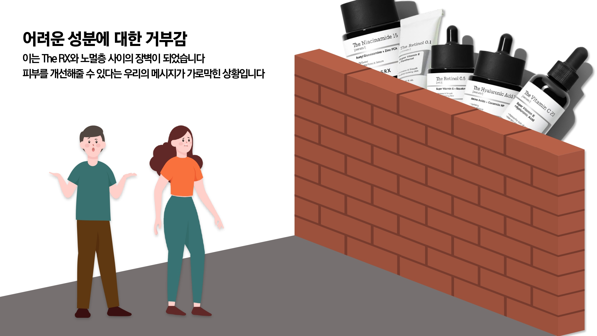
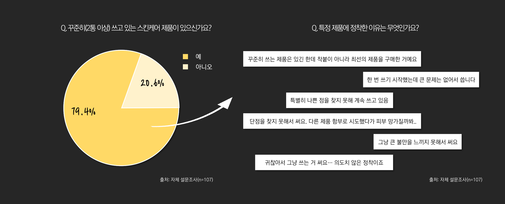
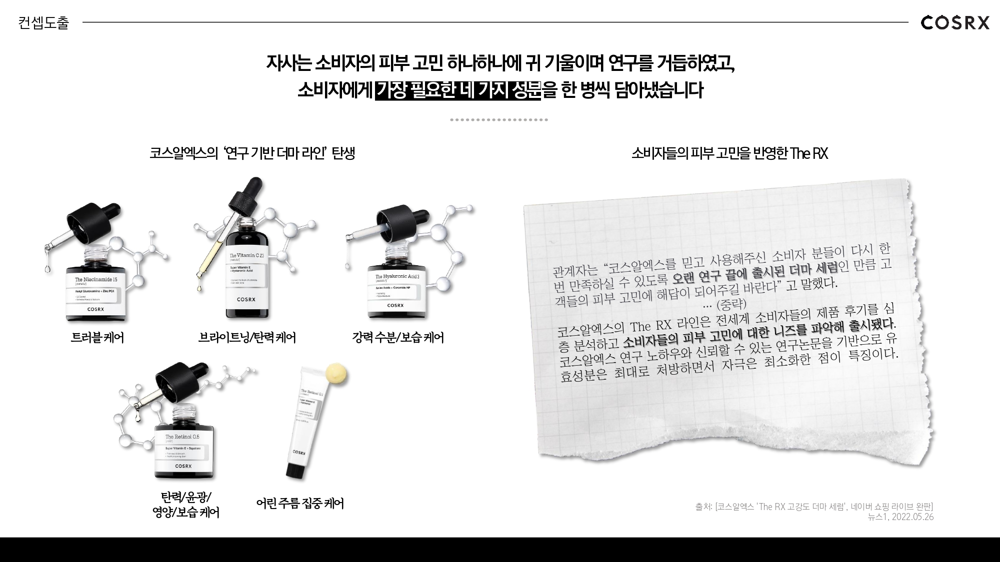
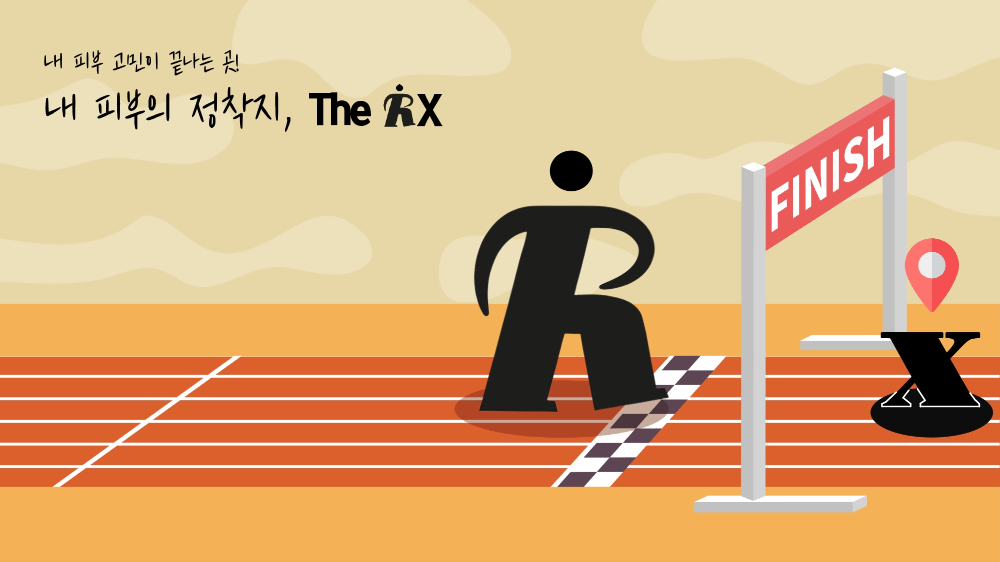
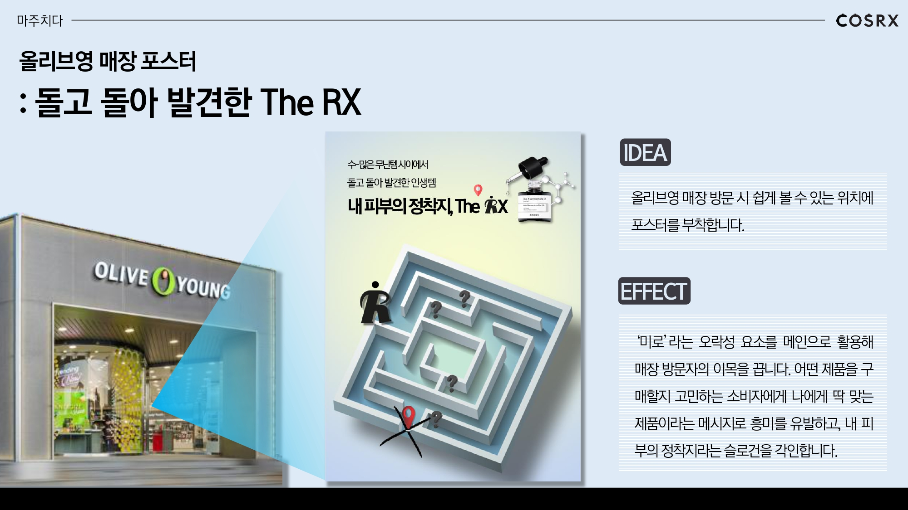
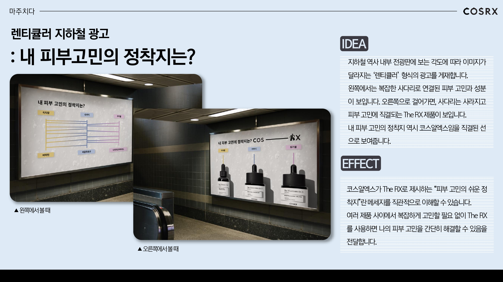
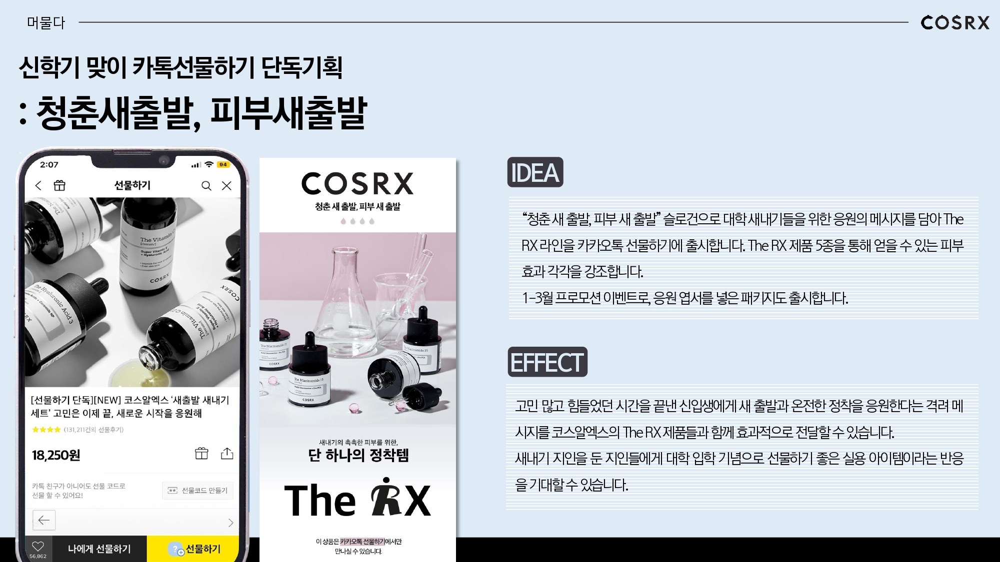
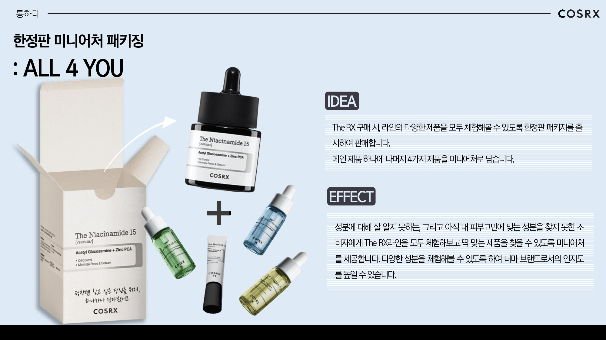

COSRX 산학협력 우수상 🏆
107명 설문과 10명 FGI를 통해 소비자의 스킨케어 선택 행동을 분석했습니다. 이미 꾸준히 사용하는 제품이 있다는 응답의 이유를 다시 살펴 '더 잘 맞는 제품을 찾고 싶다'는 니즈를 발견하고, 이를 The RX의 피부 고민별 제품 구조와 연결해 '내 피부의 정착지'라는 포지셔닝을 제안했습니다.
Problem & Target
The RX는 레티놀, 나이아신아마이드 등 성분과 고함량을 중심으로 강점을 전달하고 있었습니다.
반면 자체 조사에서는 자신의 피부 고민은 알고 있지만 어떤 성분이 필요한지는 잘 모르는 소비자가 크게 나타났습니다.

좋은 제품이라는 설명만으로는 타깃에게 명확한 선택 이유가 되기 어려웠습니다.
자체 조사 107명 중 Normal 유형(피부 고민은 알지만 필요한 성분은 모르는 유형) 56.1%
Main Insight
"2통 이상 꾸준히 사용하는 스킨케어 제품이 있나요?"
"그런데 왜 계속 사용하고 있을까?"
같은 '정착' 행동도 이유는 달랐습니다.
일부 고객은 만족해서 계속 사용하고 있었지만, 일부는 더 잘 맞는 제품을 찾지 못한 채
현재 제품에 머무르고 있었습니다.

Insight to Positioning


Output & Result




세부 IMC 실행안은 팀원들과 공동으로 발전시켰습니다.
성과
내 역할